Home › Portfolio
Portfolio
One product, built properly, against a real brief from a real client. We would rather show you one thing you can open and use than a page of logos.
Case study
Beat The Hazard
Browser based 3D warehouse safety training for forklift and pedestrian risk, built over twelve weeks for Sulav Graj of Vantec.
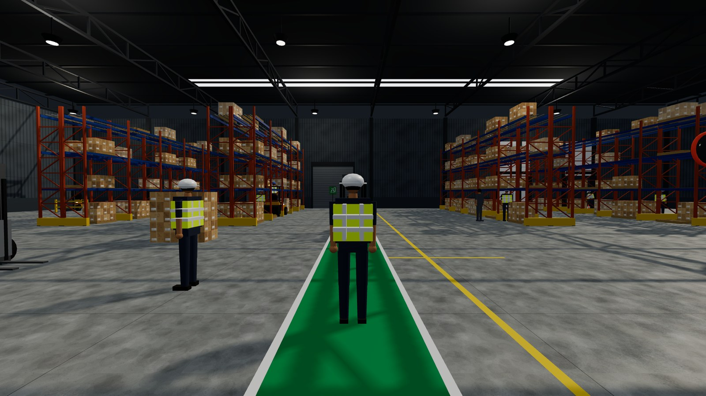
The brief
Warehouse induction records attendance. A new starter watches a slideshow, signs a sheet, and walks onto a floor where forklifts and people share the same lane. Nothing in that process asks them to look at a working warehouse and point at the thing that is about to hurt someone.
The client put it plainly in our first meeting: the paperwork satisfies an auditor, but it does not tell a supervisor which of the three people who started on Monday would walk past an unguarded dock edge on Friday.
What we built
A warehouse you walk around in a browser. Fifteen hazards are staged in it as ordinary objects: a forklift reversing across a pedestrian lane, a spill with no sign beside it, a fire exit stacked shut with pallets. The trainee walks up, flags what looks unsafe, and is told why it is unsafe and what a safe site does instead.
Then the game takes the guidance away, starts a clock, and measures them. The round ends with a score, a rank, every hazard they walked past explained in full, and three questions built from the ones they missed, so understanding is checked and not just spotting.
- Client
- Sulav Graj, Vantec
- Duration
- 12 weeks
- Team
- Three people
- Status
- Live, in client review
How it works
Learn it, then prove it
Train Mode
Guided, unhurried, impossible to fail, and optional.
- No clock at all, so the trainee sets the pace
- An arrow and a distance point to the nearest hazard
- Its location is named, and a column of light marks the spot
- Every find explains why it is a hazard
- It can be left at any time and is still there on return
Test Mode
Five minutes, scored, ranked. This is the assessment.
- Open from the start, with no training required first
- No guidance and no locations: find them by looking
- Safe look alikes are placed to catch a trainee who is guessing
- Speed is scored, not only whether it was found
- Ends with a rank, a full breakdown, and a quiz
Scoring
| Call | Reaction | Points |
|---|---|---|
| Major hazard | Within half the time allowed | +15 |
| Major hazard | After that | +7 |
| Minor hazard | Within half the time allowed | +5 |
| Minor hazard | After that | +2 |
| A safe look alike, or nothing there | Any | 0 |
| Combo, three correct in a row | Per find, while it holds | +3 |
50 points or more is Safety Champion. 30 to 49 is Getting There. Below 30 is Needs Practice. Every test is five minutes. In time means within 45 seconds on Simple, 30 on Mid and 19 on Hard.
Difficulty changes the task, not the label
| Setting | Clock per hazard | Safe look alikes | Guidance | Score multiplier |
|---|---|---|---|---|
| Simple | 90 seconds | None | Hazards highlighted, count shown | ×1.0 |
| Mid | 60 seconds | 6 | Count shown, nothing highlighted | ×1.25 |
| Hard | 38 seconds | 12 | None, and the lights are lower | ×1.6 |
The catalogue
Fifteen hazards, staged not labelled
None of these is a floating icon. Each is built into the world as the situation it describes, so it has to be recognised the way it would be recognised on shift.
Three warehouses, not three skins
| Environment | Character | Hazards placed |
|---|---|---|
| Main Storage Hall | General warehouse, wide aisles, mixed traffic | 15 |
| Loading and Dispatch Bay | Cross dock, heavy vehicle traffic, open dock edges | 12 |
| High Bay Annexe | Narrow aisle, low light, work at height | 15 |
From the build
Every surface in it was generated
The geometry, the textures and the sound are written in code and produced when the page loads. There is not a single downloaded model, texture or audio file in the product, which is how the whole thing fits in about 1 MB.
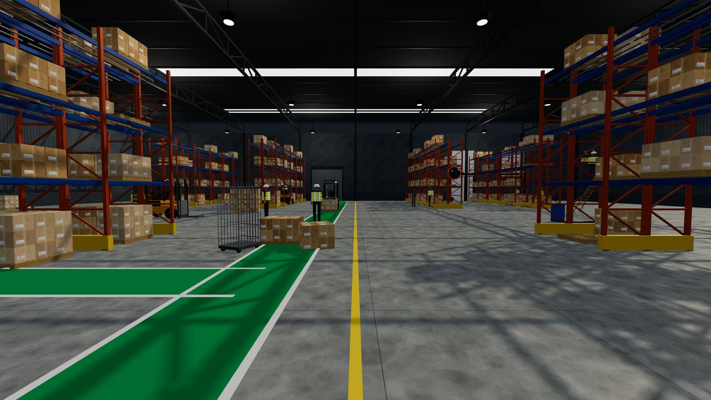
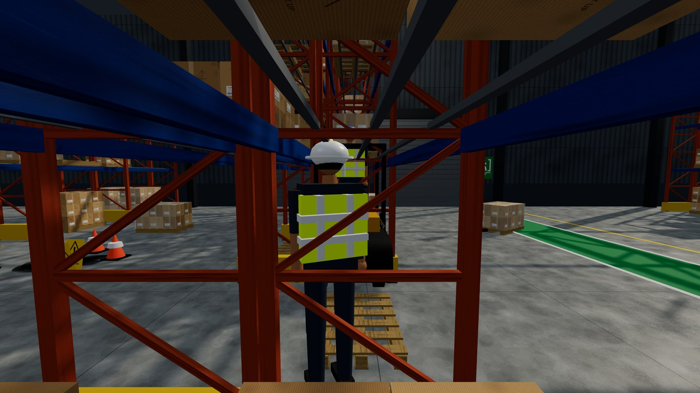
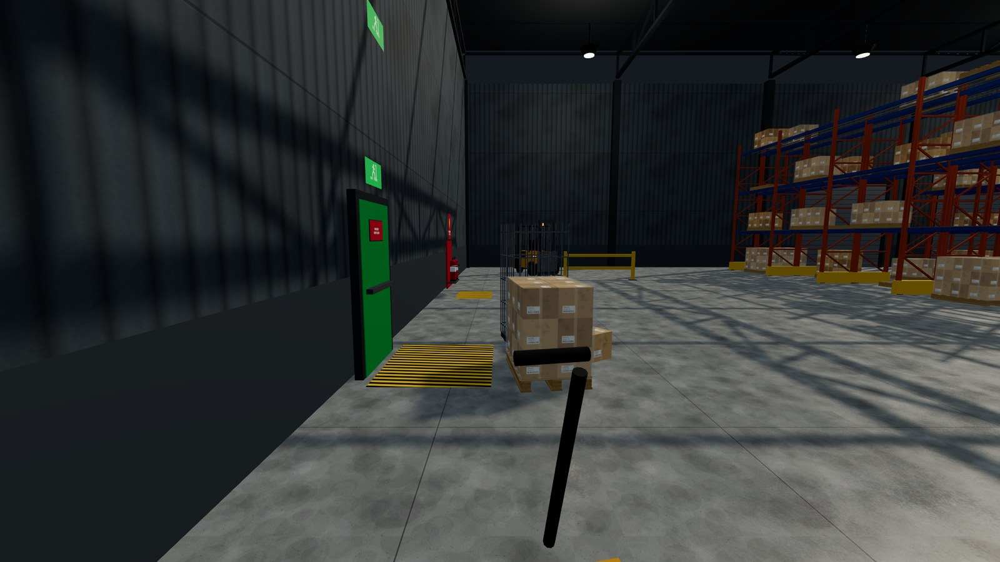
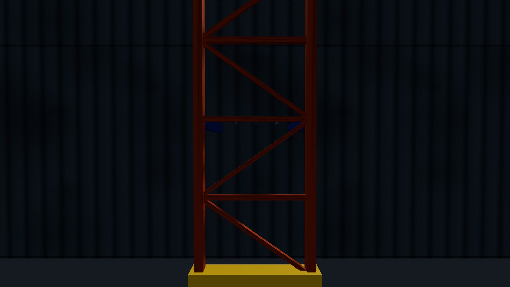
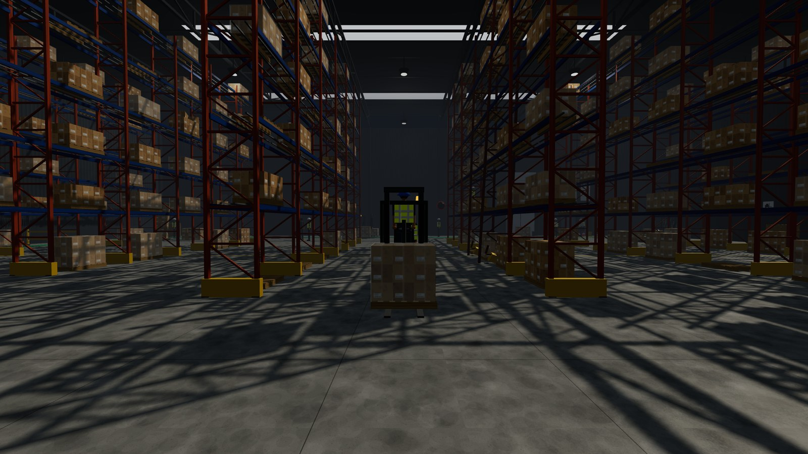
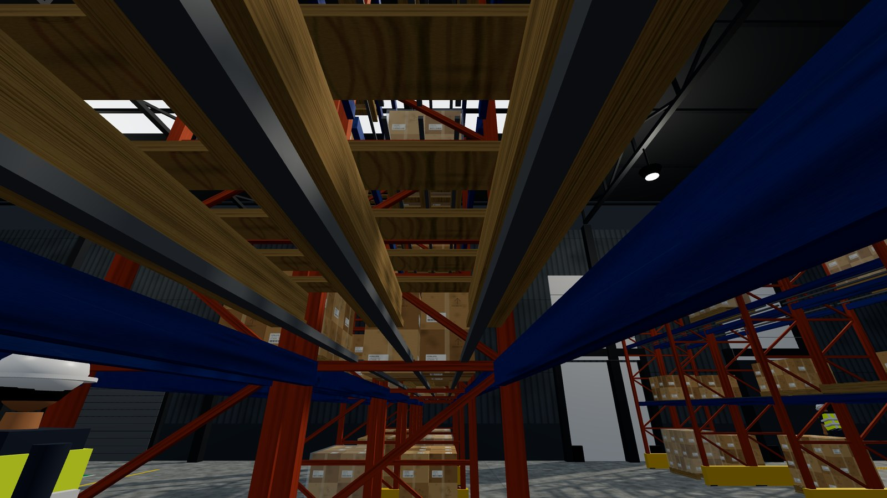
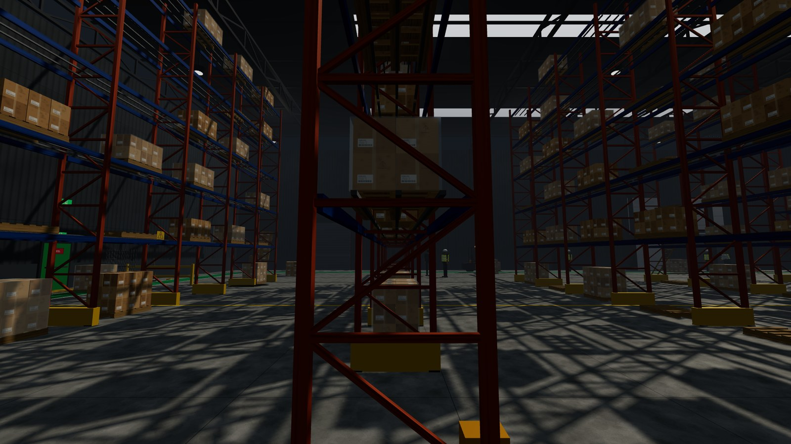
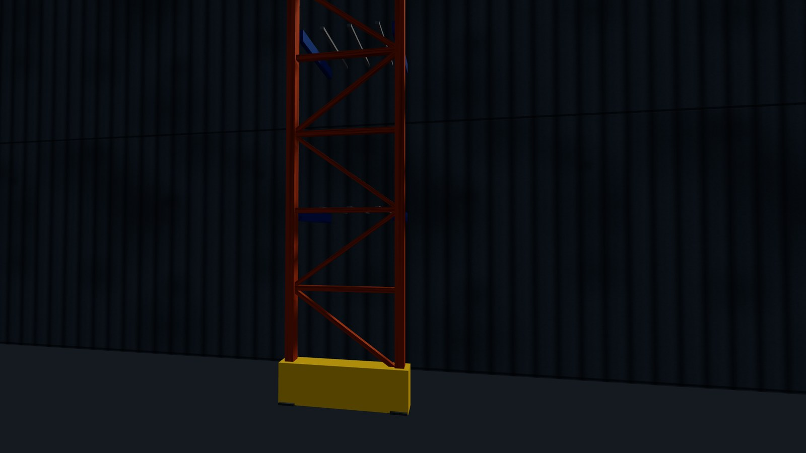
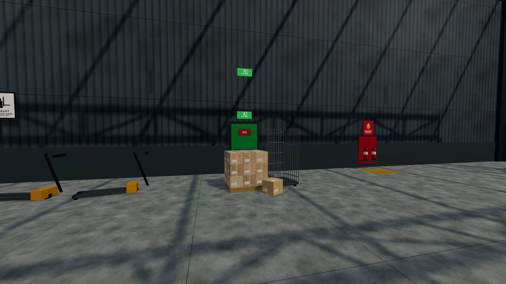
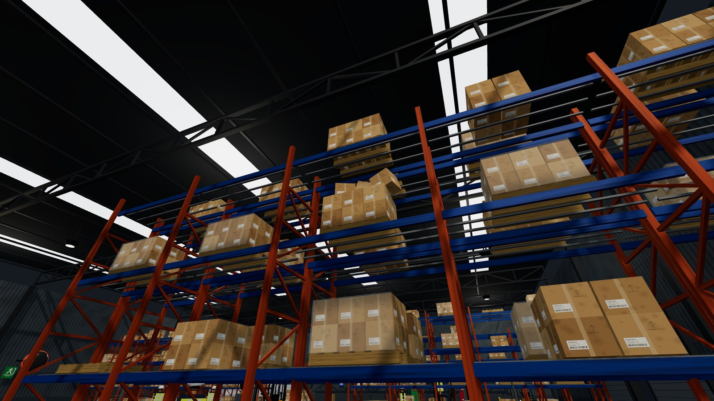
Screenshots taken from the running product, not concept art.
Under the bonnet
How it is built
| Three.js 0.180.0 | The only runtime dependency. No game engine, no framework. |
| Plain JavaScript modules | Built with Vite and deployed from the main branch automatically. |
| 405 automated tests | Across 21 files: scoring, hazards, timing, sync, security, accounts. |
| Security | Content Security Policy, HTTPS with HSTS, a frame guard, row level security. |
| Offline | Cached after one visit, plus a single file build of about 1 MB. |
What came of it
Outcome
- Demonstrated to the client in September. He gave written feedback the same day and asked for two changes: the trainee visible during play, and the training round made skippable.
- Both were live the next morning. Turning a request around in a day is the clearest way to show a client that their input changes the product.
- Four more were built after that. The end of round quiz, the full explanation of every hazard missed, a results store that cannot be edited, and a supervisor's page.
- The honest part. Screen reader support, Firefox, Safari and phone hardware are listed as not yet tested, and the frame rate needs measuring again on the training laptop. All of that is written down and handed over.
Fifteen hazards. Five minutes. How many would you catch?
The demo is the real product, not a cut down version of it. Nothing is installed and nothing is charged.